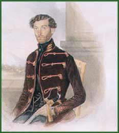

|  | ||
|
Watercolor |
||
| During the years 1848–1849, an estimated twenty thousand Jews participated in the Hungarian Revolution and War of Independence. Among them were rabbis and physicians who fought in the war, which the Jewish community supported financially as well. Dr. Zsigmond Kunewalder was a captain and the chief physician of the Fifth Army Corps. | ||